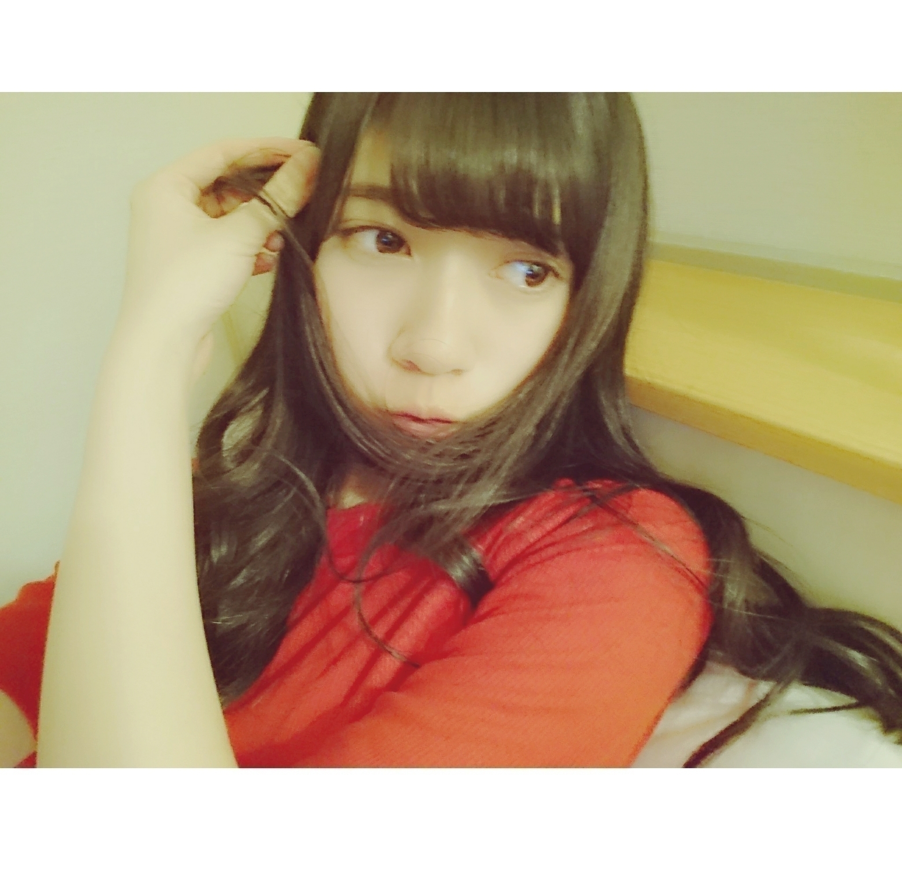
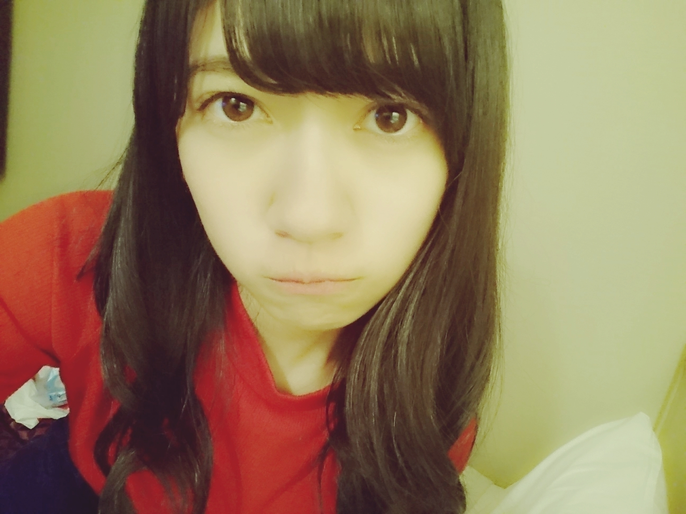

2016/0417Sun▶START
おはようございます
こんにちは
こんばんはです
最近更新したブログのコメントの中で
ランダムでコメント返ししてみました( ´-`)
良かったら最後までお付き合い下さいな

（好きな色：赤、白、黒、ピンクの順）

では、STARTです。
ボディーソープの件、面白かったよ！
▶ブログに書くか
迷ったのですが書きますね
ネットで下調べしていて
ずっと欲しかったボディークリームがあったんですよ
私、通販で買わない派の人で
お店に行ってようやく買えたーってなって
次の日の朝
お仕事行く前に塗ってみよーって足やら腕に塗ったら
ぬちょーーって
全然伸びなくて
凄い濃厚なボディークリームやなっと思ったら
泡が、、、
ボディークリームではなく間違えて
ボディーソープ買ってました( ´-`)
朝早くにこんなハプニングが起きたものですから
心臓に悪かったな、、、
飛び上がったもん( ´-`)
これが私のポンコツエピソードでした。
ラジオはすごく楽しかったです
ラジオって聴いてて安心するし最近、改めてラジオっていいなって思ってます。
●初めてのコメント失礼しますm(_ _)m昨年からじわじわと気になってきていて今ではすっかり蘭世推しになりました。14thの握手会には行けないけど15thは会いに行くねー！楽しみにしてます。
▶はじめまして
凄く嬉しいです
待ってます( ´-`)わくわく
●モバメで言ってた通り！
ブログ更新ありがとう♡
モバメとることができて良かった！！
これが今の気持ちです笑
あ、そうそう
seventeenみたよ～
もうそこのページだけでも10回は見たってくらい笑
アイドル雑誌だけじゃなくて
こういう女の子にとって身近なファッション誌にでれることって
本当にすこいな...って思いました（´-`）.｡oO
ばっちり友達にも宣伝してきた！笑
▶モバメ
モバメ大好きなんだ
また、50通はやり過ぎたと思っておりますが
またいっぱいメールしたいなとは思っております！
Seventeenさん
そうなんです
スクールバッグの中身という事で
普段お仕事の時にも持っていく私物が載ってます
こういった企画初めてだったからなんかワクワクしました( ´-`)
いつも読んでいる雑誌だからそれに自分が載ってるのは不思議でもあり
すごく嬉しかったな( ´-`)！
あら、お友達に宣伝
ありがとう！
●スーモ
蘭世の表情がたまらなく良かった。
▶ありがとうございます
冷たくお願いしますとの事だったので
全力で冷たい視線を送ってました、、、( ´-`)
●ほい！
ブログ更新ありがとう！！
コメント増えてて良かったねー！
微力ながら貢献出来たことが嬉すです
あまり長続きしないんだよねーこーゆーの笑
でも蘭世が喜んでくれるならってコメントたまにしてまーす
▶いつも有難く読ませて頂いております。
続けようって強く思うとプレッシャーで長続きしないと思います何事も
なので、私のブログのコメントは気軽に
今日の朝ごはんはパンにしたよとか
天気いいねーとか
本当にそういうコメントでも見てる側としては楽しいです
ホント気軽にして下さい( ´-`)
●ランゼも缶詰の缶開けられないでしょ？
▶何でわかるんですか
開けられないに決まってます。どや
●お仕事お疲れ様です！
カドカワに載ってたあらかわ遊園今度行ってくる！
京都からの遠征になるけどバスラ行くからそのついでに寄ってみる！
あつき
▶お疲れ様です
撮影で使った場所巡り楽しそう
ぜひ、あらかわ遊園行ってみて下さい
感想待ってるね( ´-`)
●僕も洋服すきで今日古着屋さんに行ってきましたー( ´ｰ`)
たくさん買っちゃった笑
▶古着好きなんですか？！
わー
いつかご一緒したいです
古着好きのお友達が欲しい
私もたくさん買いたいよ( ´-`)とほほ
●LARMEのイメージにめちゃくちゃ合ってると思いました。
白タイツが似合っていて握手会でも見てみたいです。
▶コメントありがとうございます
凄く嬉しいですありがとうございます
ありがとうありがとうありがとうございます
確かに！
ナイスグッドアイディア
今度白タイツを履いてみようかな
●蘭世ちゃん 可愛い ( ; _ ; )/~~~♡
seventeen 買って来ます ！！
わたし 野球好きなので
蘭世ちゃんが野球関係のお仕事してたり
ユニフォーム姿の写真 載せてくれたりするのが
めっちゃ嬉しいです（ ; ; ）♡
ユニフォーム姿も似合ってて最高です ⤴
蘭世ちゃん 宝塚詳しいさすがです 、、
わたしも調べてみようかな（＾Ｏ＾）
▶コメントありがとうございます
野球野球
女の子ならマドンナJAPANもぜひ( ´-`)
ユニフォームね
JAPANって書いてある
ピンクのデザインのが私自身も凄くお気に入りです
似合ってるって言ってもらえるの嬉しいな( ´-`)
宝塚もよかったら、、、✨
●大学で日本語を専攻していますけど今週に仲がいい人や家族にはこんばんは~とかこんにちはを言えないんですって言ってました
びっくりしました。。。。
日本語は楽しいですね ( ´-`)
日本もすごく好きです
newsがとまらんぜ
毎週読んでいますけど
日本も桜満開ですね！ すごい！
韓国もさくらすごいですよ！
雨のせいで今があんまりないんですけど
▶日本語って確かに難しいかもですね
漢字
ひらがな
カタカナ
とか敬語とかその場によって同じ単語なのに言い方が違うし
なのに、雨と飴とか
NEWSとまらんぜ
ありがとう！
こうやって、海外の方にも見てもらえるのって凄いことだよね
インターネットの凄さ
●らんらん◎こんばんは！
LARME読みましたよ～～～○
オフショットありがとう！！わたしは、LARMEみたいなフワフワ系着れないけど、読むのが楽しくて毎回買ってるかららんぜちゃんが出てくれてとってもうれしい(*^^*)
そんなわたしにも参考になったコーデあるよ！コンバースのところ！！フワフワ系だけど、カジュアルで可愛かった！！らんぜちゃんは細すぎるけど、身長が同じくらいだから真似しやすいんだー！笑
▶コンバース私もピンク持っているので
今回のはすごく参考になりました
雑誌ってだから楽しいよね( ´-`)
身長ね！
私も最近測ってないから伸びたかもだし縮んだ可能性もあるけど一応、156cmくらいなのです
●最近結構な頻度でブログが更新されてて嬉しいです！
あんまりコメントできなくてごめんなさい...
よくモバメでもコメント読むの楽しい！って
言ってくれてるから、なるべくしたいなと
思ってるんだけど読んで満足しちゃったり
文章がまとまらなくて結局後回しにしちゃったり...
まあ正直わたしなんかがコメントしなくても
たくさんファンのひといるから大丈夫だよなあ
いらないよなあって思うこともありました（笑）
▶ブログ楽しいんです
コメントもモバメではよく言うのですが
こんな私に沢山嬉しいお言葉をかけてくれたり
自分の知らない事が知れるから読んでいてワクワクするんです( ´-`)
でも、私もブログ書いたのにまとまらなかったり
なんかアップするのに躊躇してその期間が長くて結局投稿せず、、、みたいなことあります
だから、何となくお気持ちはわかります
でも、沢山コメントしてくれる方がいるからと
おっしゃいましたが
そういうのは関係ないと思います( ´-`)
どんなに多くてもどんなにたくさんの人が居ても
貴方の意見は貴方しかできないものだから
1人でも多くの方の
お話聞きたいなーってテラダは思います！！！！
だから、気軽にしてください！
コメントありがとう！
●蘭世は裸眼？？
▶裸眼だよ目は凄くいいと思います、、、
1.5~2です多分
むむっ( ˙-˙ )

追加お知らせです( ´-`)
乃木坂46公式サイトで
スケジュール
メンバー寺田蘭世て押すと
発売日とか細かく出るのですが
これすごく便利なので
チェック宜しくお願い致します✨
4月15日発売の
EX大衆さんにソログラビアで出させて頂きました
スケジュールに書いてなかったのでこの場で告知いたします！
宜しくお願い致します
オフショット沢山あるから
またしばらくしたら
載せますね( ´-`)
全国握手会
ポスター
14枚目全国握手会でしか
手に入らないとか言われちゃうと欲しい
全国握手会会場で交換できるらしいです！
気になる木
私も欲しいな
今度並んで交換してもらおうかな、、、
握手会楽しかったです
握手会なんか久々な気がしました
直接会うっていいですね
改めて実感しました！
ありがとうございます！
本日は個別握手会です
人生初の4部制です
不安もありますし楽しみでもありドキドキしています( ´-`)
1、2部はちと早めですが
お気をつけてお越し下さい
待っております( ´-`)
最終オーディションのとき
アイドルはキラキラしてて
その姿をみて頂き
『元気を貰えた』
『笑顔になれた』
そういう存在になりたいっと言いました
今、それが出来てるのかな
では、またね( ´-`)


世界中へピース。
2016/04/17 09:30


コメント(625)
今日は嫌なことが多かったよ、、
でも毎日生きてるということだけで、それに感謝すべきということがここ最近で痛感することが多いので、毎日自分のやるべきことをやって、後悔のない人生にしなければいけないと思えました！
僕なんかが言えることではないですが、実はきぃちゃんと同い年なのでお互い頑張りましょうね！
LIVE楽しみにしてますね(｡･ω･)ﾉ
コメント返しは親近感出て良き。
らんぜ考えが大人っぽくて
でも可愛くて素敵だなって思います。
今日も頑張って
飛鳥さんの歯ブラシになりたいやつです！
個握ないけど、京都で全握行くねー
今日は個握だね！
幕張行けないけど楽しんできてください(っ´ω`c)ﾏｯ...
次の名古屋で待ってますよーよよよー
蘭世がいてくれてほんとに幸せだよ 〜
ボーダーめっちゃ聴いてるし、世界中へピースってとこ聞く度にうおおお！ってなっちゃうんだよ笑笑
コメント返事ありがとう！
めっちゃ嬉しいよ！
京都の握手会が楽しみo(^o^)o
あつき
よろしくぅ
寺田蘭世様
おはようございます。
今日は、握手会だね！
行けないけど、頑張ってね〜
捻挫大丈夫かなぁ！
さいごの世界中へピースの画像キュン死しちゃうくらい可愛い！！！！！最高！！！最近、通学とかのときにボーダーずーと聞いてるから誰がどこ歌ってるかすぐわかるようになっちゃったよ！！！是非ライブでまた、歌って欲しいなー！！ボーダー大好き
どうすれば質問返ししてもらえますか？
質問してみた←
まぁ、しなくていいけどね笑
背中が痛すぎて死にそうです
握手じゃなくてマッサージしてほしい( ´-`)
欅行かなかったので褒めてください今日もよろしくお願いします♪
今日は個握！！
このタイミングでのブログ更新、テンション上がりますv(｡･ω･｡)ｨｪｨ♪
昨日は全握行けなくてごめんね(><)
ポスターの交換には行ったんだけど、それだけで時間がなくなって帰っちゃいました...
でもテラダポスターはちゃんと手に入れたよ！！
部屋に飾ります♪
今日は２部からになっちゃうけど、テラダレーンにお邪魔します（´-`）
楽しくお話出来たらなって思いますd(≧▽≦*)
では、短めだけど
これからも、
蘭世の勢い、止まらんぜーー
蘭世は私にとっては、とても大切な存在です。
お仕事頑張って下さい。
全ツ 宮城 当たった！
8/14 昼公演だよー！
たのしみぃぃい！
女性席だから 〜 どうかな 〜 。
最前列だと いいなー！
らんぜぇぇえって 叫びまくるね！笑笑
今日の個握 頑張って
富山県魚津市に暴風警報が発令されていて、外はめちゃめちゃ強風です。でも、友達と魚津のアピタに遊びに来ています。しかも、自転車で来てます。
質問
蘭世ちゃんは、バドミントンしたことありますか？僕は、高校でもバドミントン続けます。
とってもテンションがおかしいことになってしまいました
昨日は握手会楽しかったよ！
今日も個握も行くから待っててね！
何回か行くから楽しみにしてます！
らんぜの勢いがとまらんぜ！
初めてコメントします
昨日の全握、ひなちま先輩に会うために21レーンに行ったんですけどらんぜともお話できて本当に嬉しかったです！
初めて来ました、って言ったらほっぺたをつん！ってしてくれてヤバかったです。。。死にそうになりました笑
これからも頑張ってくださいね♡
可愛い！
今から野球の試合行ってくるね(^-^)/
では、ばいちゃ(=ﾟωﾟ)ﾉ
うれしいよー
自分は部活と勉強を頑張ろうと思って
今必死に頑張ってます！
蘭世が頑張ってるから自分も頑張らないと
って切実に思います。
蘭世への愛がとまらんぜ
昨日は楽しかったよ！初めて握手に行ったんだけど、優しくしてくれてありがとう。また次回も蘭世ちゃんのところに行くね！
あれから、足の具合はどうなのかな？ライブに出られなかったのは残念だと思うけど、ゆっくり休んで、早く治してね。
季節の変わり目だし、身体も大事にしてね(^-^)
握手会頑張ってください。
またコメントします。
しばらく行けなくて寂しいな
でも、行けなくても応援してるからー！
昨日は全握お疲れさま！と、
初の生蘭世楽しかった！
初めてでなに話せばいいかわからなくて、ぎこちなくなっちゃったけど蘭世の対応が優しくって
『来てよかったー！』って思えたよ！(￣^￣)ゞ
(3週してしまったよ（´-`）)
15枚目は個握とっていくよ！
アンダーライブに初参戦するのですが
らんぜさんのサイリウムカラーって何色ですか？
コールは、らんぜですよね？
楽しみにしてます！
最近、モバメも取り始めたんだけど読んでて楽しいです！毎日、いつメール来るのかなーなんてワクワクしながら待ってるよ！
昨日の握手会楽しかったー！
正直らんぜちゃんのレーンには並んでませんでした…
でもみり愛とまいちゅんのレーンに並んでる時にちらっと見えたひなちまとらんぜを見て唖然…可愛すぎる
今日の個握には行けないけど次の全握、個握ではらんぜのレーンに行ってみようと決心した1日でした！その時はよろしくお願いします！
レーンにはいってないのに対応の良さや笑顔、それにこっちのレーンをちらっと見て笑顔をくれた優しさで、自然と笑顔になってました！
早く次の握手会に行きたいなぁー！
コメント返しすごいね！一つ一つにしっかり長文で返してるから時間も労力もかかるだろうけど楽しんでね！
ホームページのらんぜ押すやつすごいね！便利や
ポスター楽しかった！欲しいポスターが手に入った時の感覚は忘れられないね笑
個握大変かもだけど頑張ってね！
昨日の全握楽しかったよ〜
初握手で緊張してたんだけど蘭世が話し掛けてくれたから緊張和らいでめっちゃ楽しかった(*^^*)
今日の個握も楽しみにしてるねo(^o^)o
コンバース履いてくれば
良かったぁぁぁぁ
今日はアディダスですヽ(ﾟ､｡)ﾉ
元気貰いに今日も会いに行きます＼(^o^)／
自分は握手会京都でいきます！
だからまっててね！
ブログの更新ありがとう！
蘭世への愛がとまらんぜ
コメントする